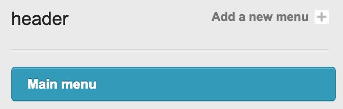

Adding a new page
Adding a new page is easy!
- Hover over the Content tab at the top.
- Select Pages from the drop down menu - You will be presented with a list of current pages.
- On the right-hand-side of the page there is a button called Add a new page, click this.
You will then need to enter the details to get the page started. Once you've added the page you'll have the option to customise it further, but for now we will focus on the fields below:
Page title The title of the page, this will appear at the top of the page in the browser title
Admin reference A name for the page that only administrators and editors will see (this will be created by default)
Slug A unique URL friendly name for the page, that will form the name of the page (this will be created by default)
Layout Choose the layout of the page you would like to use (more on layouts later)
Group Pages are organised into groups to make them easier to find, select an existing group or make a new one (more on groups later).
Editing a page
Choose the page you'd like to edit from the page list, click on either the title or edit to get started.
A page, along with other items in the CMS have numerous options, split up into tabs. The most important information is on the first tab but click on the tabs to see other options available to you.
Content
Once you have created your page, you can start adding content. You will be presented with a screen like this.
Once you have created your page, you can start adding content. You will be presented with a screen like this.
As you can see there is a field where you can add your content with the following icons:
| At the bottom | On the right |
| Add a column | Add a row |
| Delete a column | Delete a row |
| Move column left | Move row up |
| Move column right | Move row down |
| Edit row classes |
Types of Content
Double click the field to add content, and you will be given a few different options. WYSIWYG will be the main one we will focus on:
WYSIWYG (What you say is what you get) This is the main content editor in the CMS. This works in a similar manner to a word processor like Microsoft Word. There are many features to the WYSIWYG module, but a few of the key ones are:
| Paste as plain text - this will strip all of the invisible characters from your word document and leave you with the raw text. |
| Insert/Edit link - this allows you to add an internal or external link. Simply highlight the text you would like to link and click the icon. |
| File Manager - this will insert a file into the page and the file path can be edited. By default the file will view in the browser. |
| Image Picker - this will insert an image into the page and you can resize this by dragging the corner of the image. |
Menus
This allows you to position menus on the page. If the page layout has menus assigned to it already, these will already be set, but this module allows you to assign menus to individual pages.
Menus are created and edited in the menu section, but you assign menus to the pages you would like them to appear on.
Depending on the layout of the site, you'll be able to assign menus to different locations. Locations are typically header and footer and refer to the position of the menu on the page.
If you click on Add a menu you can then select the desired menu from the list that pops up.
In this menu you can select the Menu you would like, so for header we would click on Main menu.

The menu will appear in the relevant list. If you add multiple menus to a location you can order them by simply dragging them.
Do not forget to hit save once you've finished to keep your changes.
SEO
This allows you to embed keywords and descriptions into the HTML to make it easier for users to find you side on search engines such as Google and Bing.
Attributes
Permissions

This allows you to set who can view specific pages, for instance administrators, or people who have accepted a disclaimer. If you wanted to hide the page you can even remove the permission.
Do not forget to hit save once you've finished to keep your changes.